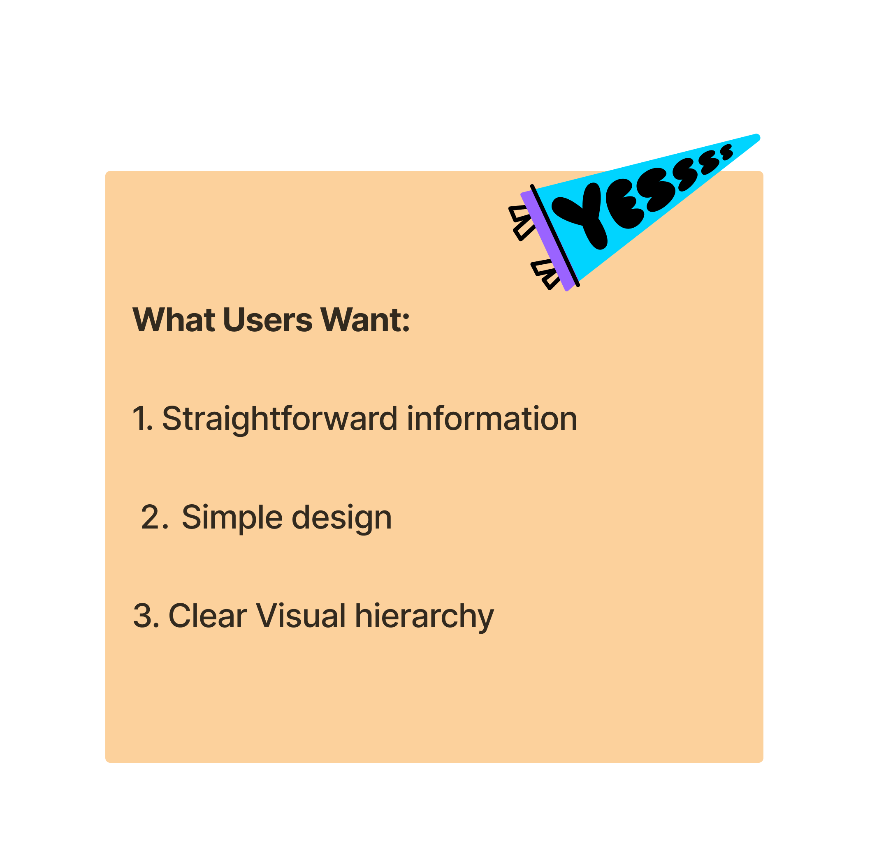
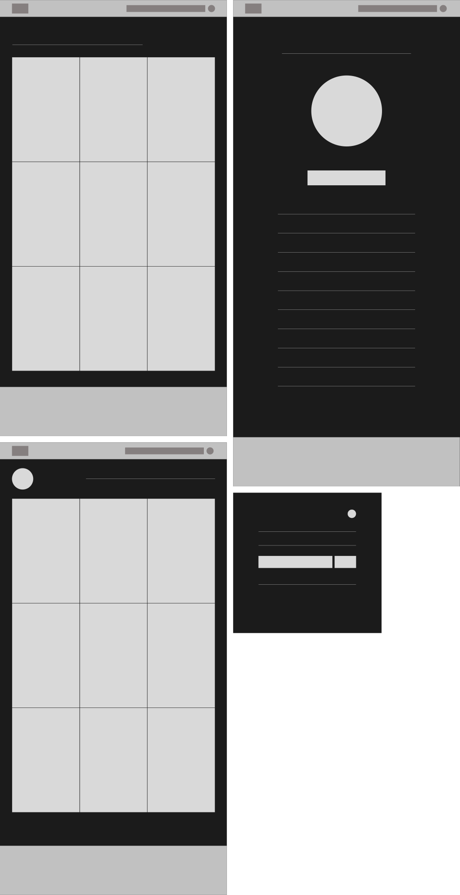

"Preserving the original works of our time for modern day
viewers." - Art History’s vision
Define

• Project Summary •
Problem: In a busy world where people often are caught up
in their own lives, Art History will provide a simple to use,
easily accessible, modernized database of historical art
information. This will provide users with monumental and
foundational art pieces of humanity, public domain images, and
biographies.
Role: UX Designer | Research
Duration: July 2024
Team: Independent
Constraints: One week project, single person design team,
creating a sample that communicates the entirety of Art
History.
My first step was to choose an artist’s profile to focus on
for this project. This would help me visualize the direction
of this website.
I decided to focus on Monet as the artist for this sample. I
found his work soothing, aesthetic, and intriguing. This was a
personal choice.
• The Goals •
-
Enhance User Experience: Develop a website that
provides an intuitive and engaging experience for users
interested in art history.
Ensure the design is user-centric, allowing visitors to
easily explore artists and their works.
-
Promote Accessibility: Create an accessible
website for all users, including those with
disabilities.
Provide detailed bibliographies and
contextual information to deepen understanding and
appreciation of the artists.
-
Increase Engagement and Responsiveness: Design a
digital environment that captivates users with rich
visual content and interactive elements.
Ensure responsive design to enhance user engagement
across all devices, providing seamless access to art
history resources.
An intuitive online experience that
captivates users by showcasing historical artists and
their masterpieces, enriching the appreciation of art
history while enhancing overall UX design,
accessibility, and engagement.
Prepare

I conducted a competitive audit comparing two available sources
of art history information: Wikipedia and NGA.gov
The intentions behind this audit was to observe what websites
are currently doing well, and what could be improved. This would
inform design decisions moving forward.
| Website Name: |
Wikipedia |
NGA.gov |
| Website: |
https://en.wikipedia.org/wiki/Art_history
|
https://www.nga.gov/collection/artists-search.html
|
| Accessibility: |
Excellent, accessible and easy to read
|
Very good, visual heirarchy achieved
|
| Tone: |
Professional |
Professional |
| Visual Design: |
Informative; Somewhat overwhelming
|
Simple and has some suggestions |
| Responsiveness: |
Responsive to all device sizes |
Responsive to all device sizes |
| Navigation: |
Very little visuals, Sense of “lacking” the impact that
artists have had
|
Sense of “this showcases the artist”, and fulfillment
while navigating. Not an extensive collection
|
|
Feelings while navigating:
|
Easy to navigate; Lots of scrolling to gather info
|
Easy to navigate; intuitive design
|
I made a list of assumptions that I thought users might be
looking for:

• User Surveys: Feedback •
The next step was to gain user feedback on the original website
I created a survey which I gave to a total of 3 participants.
The user persona of "Diego Christo" was created based of user
feedback

This assured my assumptions while providing insight to how the
overall design should be. The navigation would be organized so
that the user has a linear path. This is to reduce the feeling
of being overwhelmed with information as the website is intended
to expand as more artists are added to the database. There will
always be a "search" bar located in the header on every page so
the user can break this flow if desired.

With the goals and findings in mind, I brainstormed some ideas
of what this website might look like. I wanted to keep the
design simple, allowing the artwork to be the main focus.
Design

• Art History •
While designing the wireframes, I considered the busy lives of
users. They would likely want quick and easily acccessed
information which pinpoints their exact reason for visiting the
site - to learn about art and artists.
• Wireframes •

I then designed the High Fidelity prototypes in Figma. I focused
on both desktop and mobile in these mockups. For a more detailed
look, here is the link to my
Figma File
• HiFi Prototype •

• User Testing Feedback •
Based on the data from user testing on the final design, here is
what we find users approve of:
Before sending to development, this is what users say needs
improvement.
• Primary Flow •
• Style Guide •

I kept the overall theme for Art History very minimalist so that
the artwork is what really stands out to the viewers. I chose a
dark theme as that would also compliment the color palettes of
the paintings. Gold was the accent color to invoke a classy
feel.
Reflect

• Challenges and Solutions •
My primary challenge was designing a clean and simple layout
that effectively presented a substantial amount of information.
I aimed to create a website that would prevent users from
feeling overwhelmed. To achieve this, I decided to use large
images as buttons to showcase the artist's artworks. This
approach allows the content to be organized in a grid format,
enabling dynamic loading of information onto the user's screen.
This setup also makes it easy to update the database regularly.
I used auto-layout in Figma to implement this feature.
• Learning & takeaways •
This project gave me an excellent opportunity to effectively use
auto-layout. While I had some prior experience with it, creating
a successful grid system that dynamically adds and removes
images made me feel much more accomplished in my understanding
of auto-layout.